Commanderchess
Board Game Arena 官方规则文档
Description
Commander Chess, or Cờ tư lệnh (literally "Chess Command") is a xiangqi variant created by Hải Quý Nguyễn.
Cờ tư lệnh is played with 38 pieces (19 per player) on a board that is 11 lines wide and 12 lines long. It is played on the vertices of the grid. The board is divided into two land territories by a river in the middle of the board. The three files on one side of the board form the sea.
Object of the game
To win you must capture the opponent's Commander, or all units of a single division of the opponent's army:
- Sea - Both Navy ships. 2 pieces total.
- Land - Artillery, Tanks, Infantry. 6 pieces total.
- Air - Both Planes. 2 pieces total.
- Commander - 1 piece total.
Pieces and movement
- All pieces have a range of movement. For example if a piece has a range of 3, then it may move 1, 2 or 3 spaces.
- All pieces move orthogonally (like a castle in standard chess), and some also move diagonally (like a bishop in standard chess).
- Hero status will mean a piece can move 1 additional space. The piece will also be able to move diagonally. [Af]Planes become stealth planes and are immune to ALL anti-aircraft.
- Normally pieces block other pieces from moving but some pieces can Jump over other pieces.
- Some pieces can carry other pieces, a piece will embark onto the carrier and share the same location. Either piece can move to the other piece. See 'Stack moves'.
- Anti-Aircraft pieces provide a Ring-of-fire range. See 'Airspace' for more details.
| Piece | Image | Letter | Type | Range | Diagonal | Carry | Embark | Jump | River Bank | ROF Range | Special |
|---|---|---|---|---|---|---|---|---|---|---|---|
| Commander | 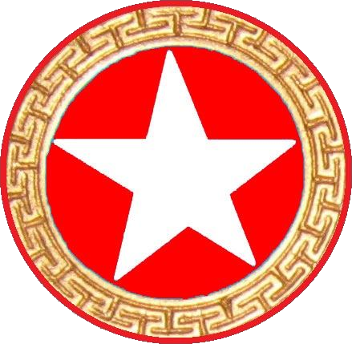 |
C | Land | 10 | - | - | T,N,Af,HQ | - | - | - | If captured you lose.
Cannot goes past opponents C line-of-sight, and if you open a direct line-of-sight then you immediately lose. If opponents pieces place the commander in check they gain 'hero' status. The commander has protection inside the HQ from pieces[In,M,Aa,Ms]. |
| Infantry | 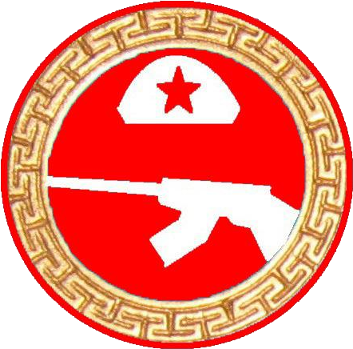 |
I | Land | 1 | - | - | T,N,Af | - | - | - | - |
| Tank | 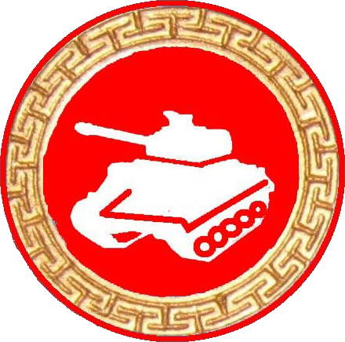 |
T | Land | 2 | - | C,In,M | N,Af | - | - | - | Only 1 tank maybe carried by a Navy on Plane.
May only carry 1 Infantry. |
| Militia | 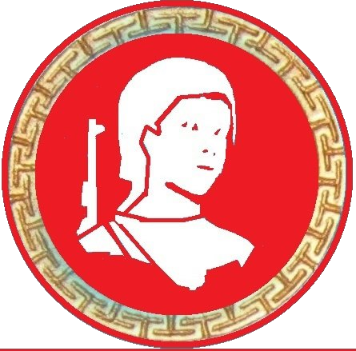 |
M | Land | 1 | yes | - | T,N,Af | - | - | - | - |
| Engineer | 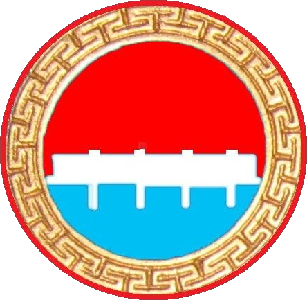 |
E | Land | 1 | - | A, Aa, Ms | - | - | - | - | May carry all pieces, but only the single space across the river. |
| Artillery | 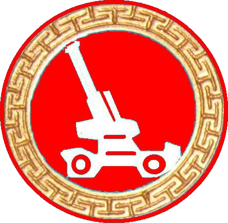 |
A | Land | 3 | yes | - | E | to capture | restriction | - | May jump over other pieces to capture.
May only cross the river at 2 BANK positions, but can capture and move across the sea. May cross the sea if being carried. |
| Piece | Image | Letter | Type | Range | Diagonal | Carry | Embark | Jump | River Bank | ROF Range | Special |
| Anti-Aircraft | 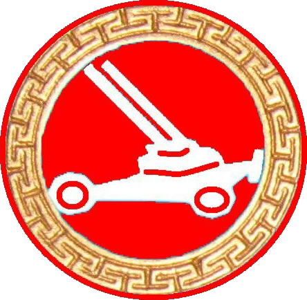 |
Aa | Land | 1 | - | - | E | - | restriction | 1 | Anti-aircraft. May shoot down opponents plane. See 'Airspace' for more details.
May only cross the river at 2 BANK positions. |
| Missile | 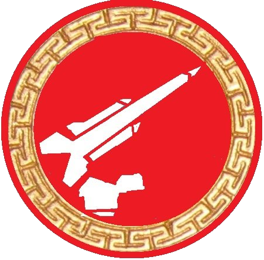 |
Ms | Land | 2 | - | - | E | - | restriction | 2 | Anti-aircraft. May shoot down opponents plane. See 'Airspace' for more details.
May only cross the river at 2 BANK positions. |
| Headquarters | 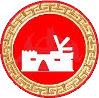 |
HQ | Land | 0 | - | C | - | - | - | - | Does not move. Protects commander against [In,M,Aa,Ms] |
| Airforce | 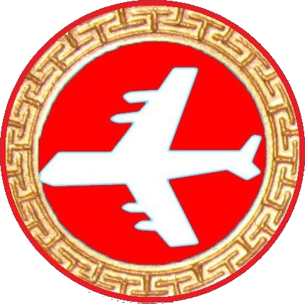 |
Af | Air | 4 | yes | T,In,M | N | yes | - | shot down | May perform 'bombing' on an opponents land and sea pieces (not Af) and return to original position. See 'Airspace' for more details about being shot-down. |
| Navy | 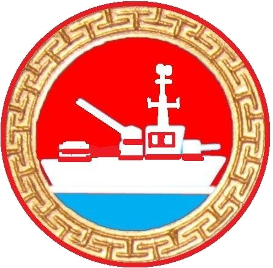 |
N | Sea | 4 (3) | yes | Af,T,In,M | - | yes | - | 1 | Anti-aircraft. May shoot down opponents plane. See 'Airspace' for more details.
Cannot diagonally move across land, but can fire gun (range 3) onto land pieces. If it can legally move to capture a piece, it does. May move into the river but may not move onto or passed the bank. |
Airspace
When moving Planes [Af] may be shot down by the opponents anti-aircraft pieces.
Anti-Aircraft Pieces (range): [Ms] Missile(2), [Aa] Anti-Aircraft(1), [N] Navy(1). 'Note': this range a circular radius.
A plane can commit kamikaze (capture the opponents piece) while staying in opponents anti-aircraft range; But if the plane leaves the ROF before reaching its target then it will be shot down, and will be unsuccessful in performing kamikaze. Please see image for cases of 2 Aa pieces.
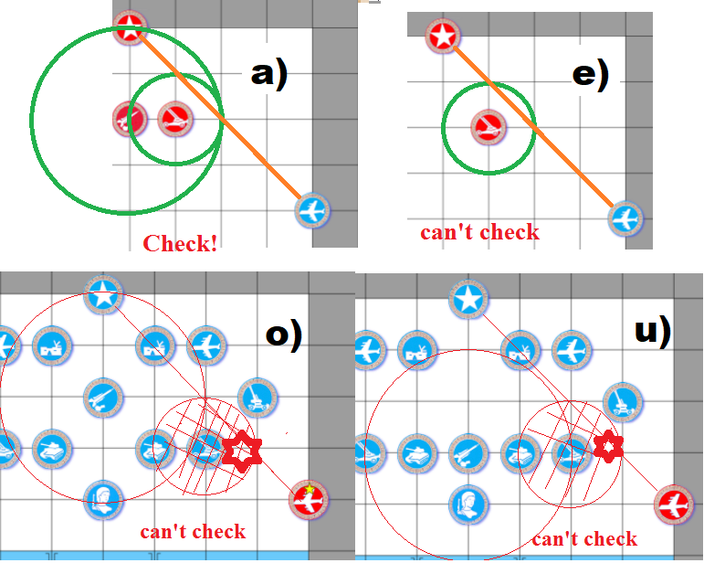
The last [Af] plane committing kamikaze against the opponents last [N] Navy will win the game, even though the plane gets shot down.
A plane can get shot down during its own turn due to anti-aircraft pieces, when this happens a player cannot undo their turn.
General rules
Pieces capture as they move, and never jump, unless noted.
Pieces can cross the river but not occupy sea points unless noted.
[N] Navy piece may not cut across land when moving diagonally.
Pieces which check the opposing Commander are promoted, gaining 'hero' status and gain special abilities.
Hero status will mean a piece can move 1 additional space. The piece will also be able to move diagonally. [Af] Planes become stealth planes and are immune to ALL anti-aircraft.
When a land piece captures a [N] Navy at sea (not the coast), it must stay where it is. When a [N] Navy captures a land piece in-land (not the coast), it must stay where it is. If navy/land piece capture is at coast position, then the captured piece is replaced as usual.
Stack: Pieces that can carry other pieces
Stacks are a group of pieces all at the same location. They may form groups of 2 or 3 pieces.
A stack of pieces can all move in a single turn. The stack may move as a single group or any piece from the stack may instead disembark and move elsewhere. Multiple captures are possible. See the user interface section for specific instructions on moving with the stack.
The following list are pieces that can be carriers followed by the pieces and restrictions of what they can carry:
Stacks maximum group of 3 pieces (1 carrier and 2 other pieces)
- [N] Navy. May carry any combination of [C] Commander, [In] Infantry, [M] Militia, [T] Tank, [Af] Plane.
- [Af] Plane. May carry any combination of [C] Commander, [In] Infantry, [M] Militia, [T] Tank. but not 2 tanks.
- [T] Tank. May carry 1 [In] Infantry and 1 other piece. [C] Commander, [In] Infantry, [M] Militia.
Stacks maximum group of 2 pieces (1 carrier and 1 other piece):
- [HQ] Headquarters, may hold [C] Commander. HQ does not move
- [E] Engineer, may carry heavy weapons [A] Artillery, [Aa] Anti-aircraft, [Ms] Missile Also specifically must be carried across the river from one side to the other.
Examples of unusual play
Both navy and land pieces may be placed on the coast. A [N] Navy has a gun and may capture a land piece, if it does then it will only capture and move if this land piece is on the coast, otherwise the [N] Navy piece will remain still and capture.
[E] Engineers may only carry pieces from the limited number of river bank spaces, and move just the 1 space across the river. All other carried stack movements with the engineer are not allowed.
[A] Artillery can only jump over pieces when capturing another piece. Otherwise, they cannot jump over pieces.
On the Sea/Land border (coast) land pieces do not block the movement of a Navy piece and vice versa. So these pieces are not being jumped over. One is on land, the other is in the sea, but both are on the coast.
A commander that exposes himself to the opponents commander will immediately lose. (Line-of-sight).
Pieces that can jump and are not blocked by ANY piece. [Af] Plane, [N] Navy and the Navy gun. [A] Artillery(but only when capturing),
Without Enforce Check, it is possible to move into check, if you do this with your commander, then the opponents piece will become heroic.
User Interface
- Some pieces stack on top of each other. It is recommended to use the squares to the right of the board from top to bottom. It automatically selects the stack to be moved as 1 group, if you would like to split up the pieces then user must select the pieces individually.
By selecting a box you will see the colour of the box change and the text.
GREEN means this is the selected piece and the piece you are currently moving.
RED means this piece is being carried and will not move separately.
GREY means this piece will move later after you have moved the current GREEN (selected) piece.
'Stay' will mean that the carried piece will disembark and stay in its current position.
- When playing with 'Enforce check' option a player needs to RESIGN if there are no playable moves.
- There are various 'confirm' options available from the context menu (3 lines, burger menu).
- You can play with (0,0) always at the bottom, available from the context menu (3 lines, burger menu).